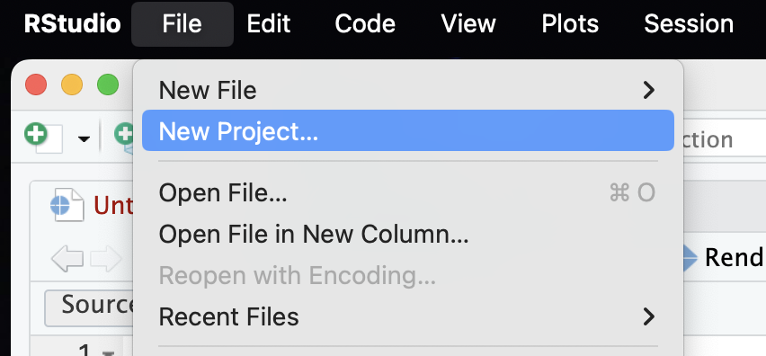
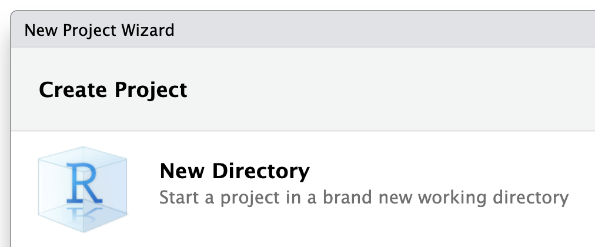
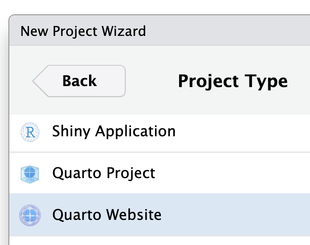
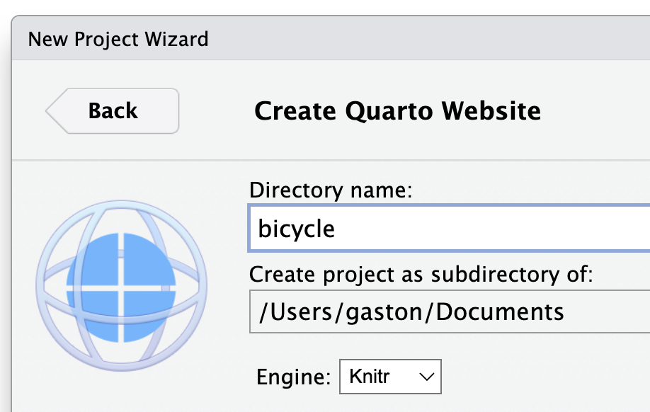
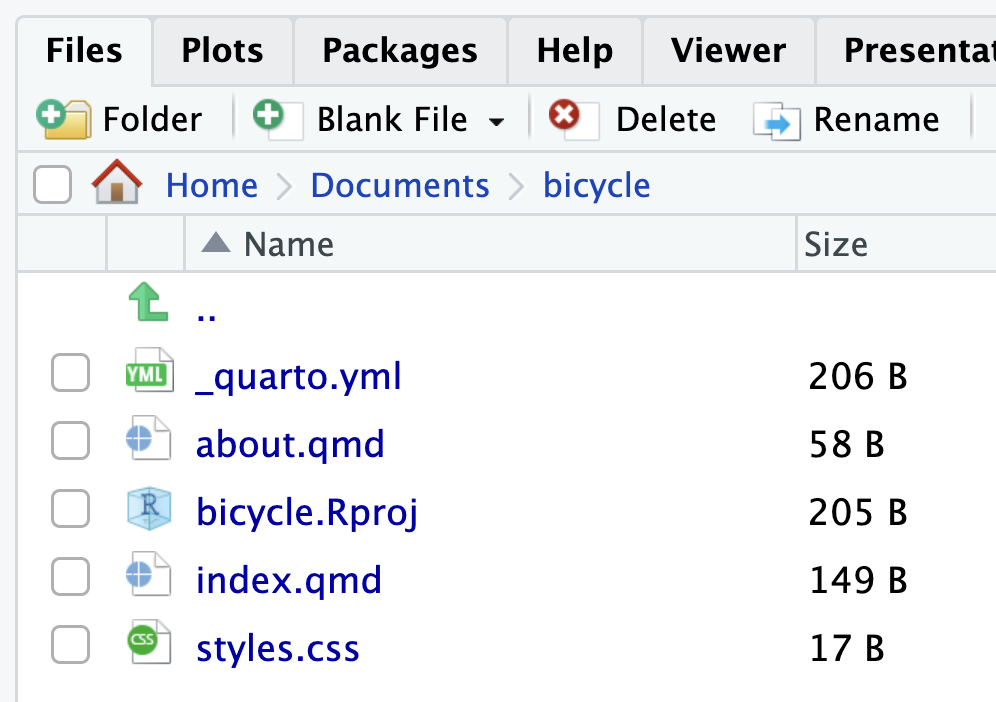

14) Sharing Your Closeread Stories
So far we’ve covered a long way. But what about sharing your Closeread stories?
In this module I will describe a couple of options to share your stories. Please keep in mind that this is by no means an exhaustive list about the various ways in which you can share your stories.
Sharing through Quarto Pub
Another interesting option to share your Closered stories is by publishing them to Quarto Pub.

Quarto Pub is a free publishing service for content created with Quarto. In fact, Quarto Pub is ideal not just for sharing a Closeread story but also for blogs, course or project websites, books, presentations, and personal hobby sites.
To use Quarto Pub you need to create a free account. This is a straightforward process that can be completed by visiting Quarto Pub’s website (link below) and following the Sign Up instructions :
I should mention that all documents and sites published to Quarto Pub are publicly visible. So you should only publish content you wish to share publicly. In addition, Quarto Pub sites can be no larger than 100 MB and have a soft limit of 10 GB of bandwidth per month.
There are a couple of ways to publish content to Quarto Pub. Here I will describe just one of them: using the quarto publish command. You can learn about the other option that uses a GitHub Action and it assumed that you are familiar with GitHub.
Using a Quarto Website
Before attempting your first publish, be sure that you have created a free Quarto Pub account.
Assuming that you have a Quarto Pub account, my recommendation is to use a Quarto Website to host your Closeread story. Follow the steps listed below to create this kind of website from scratch.
Step 1) In RStudio, go to the File tab in the menu bar and select New Project…

Step 2) Choose the type of directory that will contain your project. Assuming that you are starting from scratch, then choose New Directory.

Step 3) The next step asks you to choose the type of project, in this case we are going to use a Quarto Website.

Step 4) Next you have to choose a name, and location, for the directory of your Quarto website:

Step 5) When you click on the button Create, RStudio will start a new session, in which the working directory will be the specified directory of your website. Also, you will be able to see a handful of files:

You will need to replace the content of index.qmd with the content of your Closeread story.
Also, assuming that all you want is to publish your Closeread story and nothing else, then you will need to delete the about.qmd file, as well as customize the content of the yaml file _quarto.yml
Previewing the website. In the Terminal, you can use the quarto preview command to see a preview of the website.
Terminal
# to preview website
quarto previewRendering the website. To render the website, use the quarto render command.
Terminal
# to render website
quarto renderPublishing the website. Use the quarto publish command to publish content rendered on your local machine.
Terminal
# to publish website to Quarto Pub
quarto publish quarto-pubMore about the command quarto publish
The quarto publish command is the easiest way to publish locally rendered content. From the directory where your project is located, execute the quarto publish command for Quarto Pub. This is super simple, just run the following command in the terminal (assuming the working directory is the one where your project is located)
Terminal
quarto publish quarto-pubIf you haven’t published to Quarto Pub before, the publish command will prompt you to authenticate. After confirming that you want to publish, your content will be rendered and deployed, and then a browser opened to view your site.
_publish.yml file. The publication process will create a special yaml file called _publish.yml. The _publish.yml file is used to specify the publishing destination. This file is automatically created (or updated) whenever you execute the quarto publish command, and is located within the project or document directory.